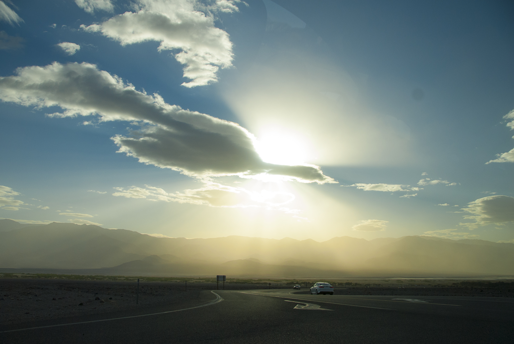

B&W Photography
Photo
2017 - Present
Experimentation with black & white as well as color images. Taken with Canon Rebel SL1, Canon 70D



Photo
2017 - Present
Experimentation with black & white as well as color images. Taken with Canon Rebel SL1, Canon 70D